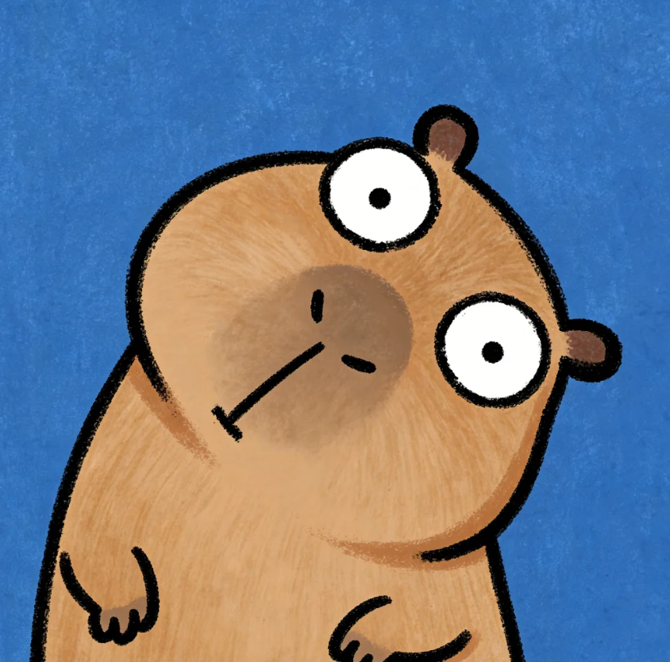

拼豆大师
上传你喜欢的图片，一键生成专属的拼豆像素图纸。
简单、好玩、易上手！
上传图片
支持 JPG, PNG
或尝试示例图片

调整设置
点击图片移除背景
撤销移除
一键清理残留
移除容差
30
请点击想要移除的颜色区域
像素密度 (大小)
32x32
拼豆品牌
MARD (默认)
Perler (常用)
Hama
Artkal
套装规格
MARD 264色全色 (不含C29)
MARD 221色全实色 (含C29)
MARD 216色全实色
MARD 144色 (A-E+6)
MARD 120色 (A-E)
MARD 96色 (1-4)
MARD 72色 (1-3)
MARD 48色 (1-2)
MARD 24色 (1组)
限制颜色数量
BETA
最大允许颜色种类
24
启用抖动算法 (更细节，但颗粒感稍强)
生成图纸
图纸预览
颜色调整
边缘调整
删除色块
撤回
取消
确认
下一步
颜色清单
保存与分享
32x32 • Perler
拼豆大师
保存图片
下载 SVG (矢量)
确定要删除这个色块吗？
确认
取消